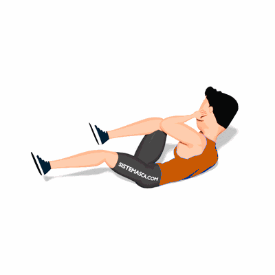

Abdominal Bicicleta

O exercício trabalha os músculos abdominais com ênfase na parte inferior, estimula também, o equilíbrio e coordenação motora. Auxilia no desenvolvimento de um abdome mais definido e proporciona variedade ao treino.
Ficha Técnica
Tipo: Funcional
Grupo Muscular: Abdome
Aparelho: Nenhum
Músculos: Nenhum
Como realizar
- Deite sobre um colchonete;
- Eleve as pernas do solo formando um ângulo de 90 graus;
- Mãos entrelaçadas atrás do pescoço, contraia o abdome e estenda a perna direita e flexione a esquerda;
- Simultaneamente, alterne a posição das pernas;
- Realize os movimentos concentrando a força nos músculos abdominais, conforme o número de repetições orientado pelo professor.
 RC STORE
RC STORE